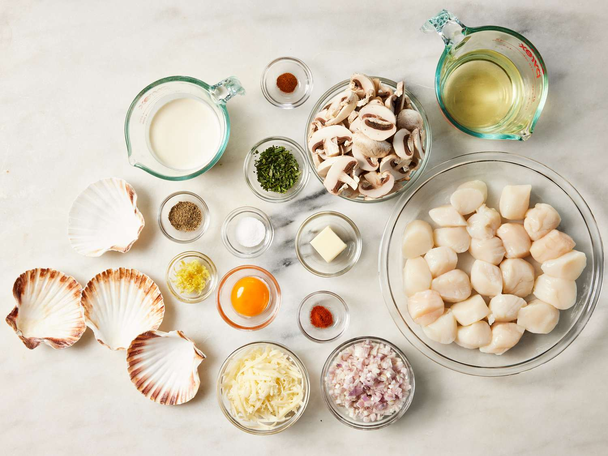
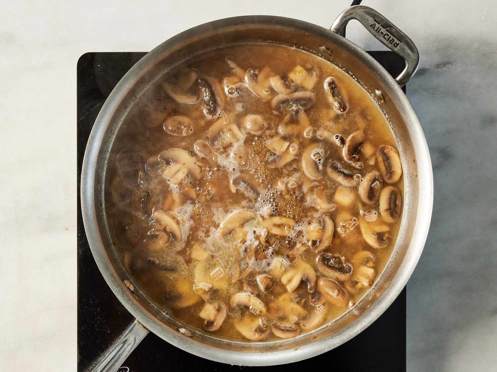
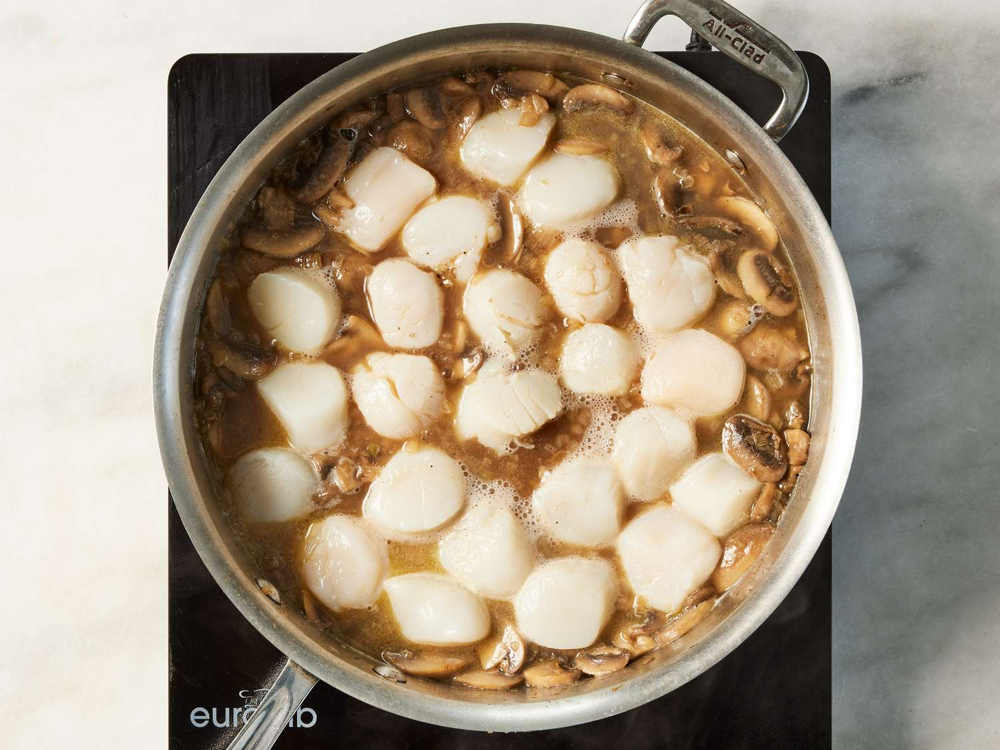
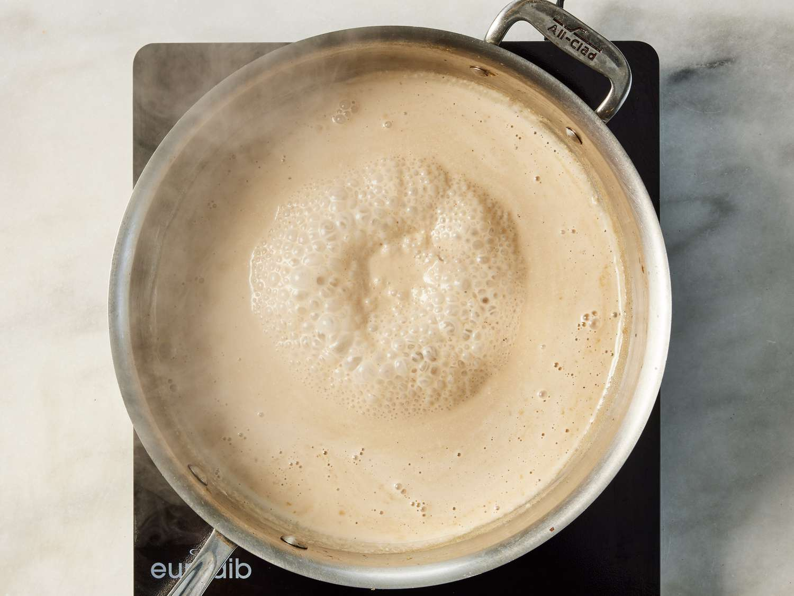
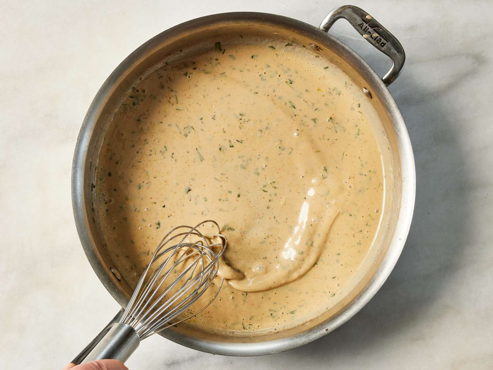
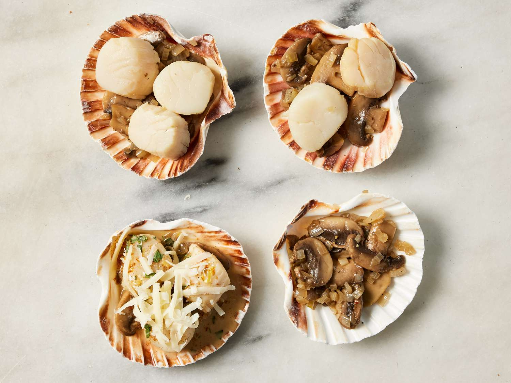
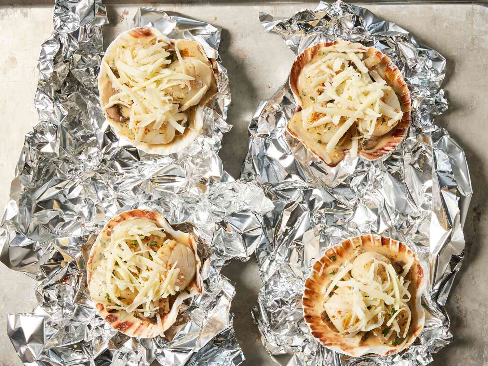
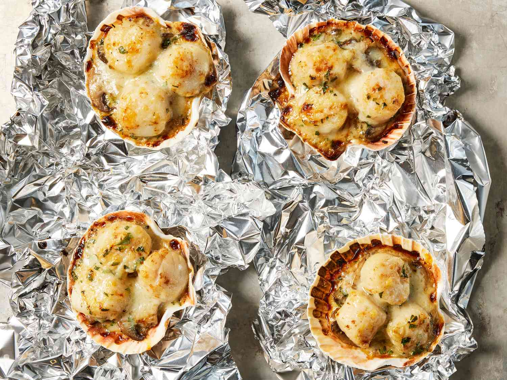

Coquilles Saint-Jacques

Coquilles Saint-Jacques is one of the world's most delicious dishes. It's rich and decadent, and yet still light. For something fancy, this is pretty easy to make!
20 mins
30 mins
50 mins
4
Ingredients
- 2 tablespoons unsalted butter
- ½ cup diced shallots
- ½ pound white button mushrooms, sliced
- salt and freshly ground black pepper to taste
- 1 cup white wine
- 1 pound sea scallops
- ½ cup heavy whipping cream
- 1 egg yolk
- 2 teaspoons minced fresh tarragon
- 1 teaspoon lemon zest
- 1 pinch cayenne pepper, or to taste
- 4 large oven-safe scallop shells
- ¼ cup shredded Gruyere cheese
- 1 pinch paprika
- 8 fresh tarragon leaves
Directions
Step 1
Gather all ingredients.

Step 2
Melt butter in a large skillet over medium heat; add shallots and sauté until translucent, 5 to 8 minutes. Stir in mushrooms, salt, and black pepper; increase heat to medium-high and cook, stirring often, until mushrooms are golden brown, about 10 minutes. Pour wine into the pan and bring to a boil while scraping the browned bits of food off the bottom of the pan with a wooden spoon; bring to a simmer.

Step 3
Gently place scallops into wine and poach in the mushroom mixture until barely firm, about 2 minutes per side; transfer scallops to a bowl. Strain mushroom mixture into another bowl, reserving mushrooms and cooking liquid separately.

Step 4
Return strained liquid to skillet, pour in any accumulated juices from scallops, and stir in cream. Bring to a boil and cook, stirring often, until cream sauce is reduced by about half, about 10 minutes. Turn off heat and let mixture cool for 1 minute.

Step 5
Quickly whisk egg yolk into cream sauce until combined. Transfer skillet to a work surface (such as a heatproof countertop or cutting board) and stir 2 in teaspoons tarragon, lemon zest, and cayenne pepper.

Step 6
Divide mushroom mixture into scallop shells, spreading it out to cover the bottoms of shells; place about 3 scallops onto each portion. Spoon cream sauce over scallops to coat; let sauce drizzle down into mushrooms. Sprinkle lightly with Gruyère cheese and paprika.

Step 7
Preheat the oven's broiler. Slightly crinkle a large sheet of aluminum foil and place onto a baking sheet. Place filled shells onto foil and press lightly to help them stay level.

Step 8
Broil in the preheated oven until bubbling and cheese is lightly browned, 5 to 6 minutes.

Step 9
Transfer to serving plates lined with napkins to prevent shells from tipping; garnish each portion with 2 crossed tarragon leaves.
Nutrition Facts (per serving)
374
Calories
22g
Fat
8g
Carbs
26g
Protein